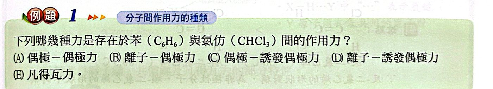
看答案與詳解收起
答(C)(E)
解
苯是非極性分子、氯仿是極性分子 ⇒ 兩者間有偶極−誘發偶極力與分散力，統稱凡得瓦力。
沒有離子，所以 (B)(D) 不存在；苯無偶極，所以沒有偶極−偶極力。
1. 偶極−偶極力：兩個極性分子接近時，一個分子的正端吸引另一個分子的負端。例：HCl 與 HCl。
2. 偶極−誘發偶極力：極性分子接近非極性分子，使後者電子雲瞬間分布不均而形成誘發偶極，兩者間的吸引力。例：HCl 與 H2。
3. 分散力（倫敦分散力）：非極性分子偶爾產生電子雲分布不均的瞬間偶極，進而使鄰近分子產生誘發偶極，這種吸引力稱為分散力。例：H2 與 H2。
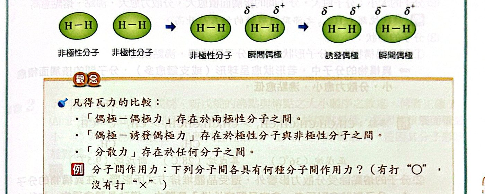
4. 影響分散力大小的因素
H 與電負度大的 F、O、N 結合時，H 帶部分正電荷；若旁邊有另一個 F、O、N（須有孤電子對）接近，就形成較強的吸引力 → 氫鍵，表示為 X−H···Y。
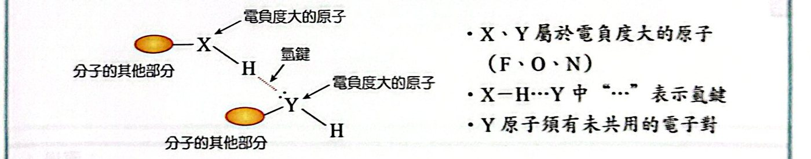
(1) 分子間氫鍵：發生在兩個分子之間。H2O···H2O、NH3···NH3、H2O···NH3
(2) 分子內氫鍵：發生在同一分子內，通常在順式異構物或苯環鄰位異構物中，形成穩定的五或六角環。例：順-丁烯二酸、柳酸、鄰-羥基苯甲醛、鄰-苯二酚、蛋白質、DNA
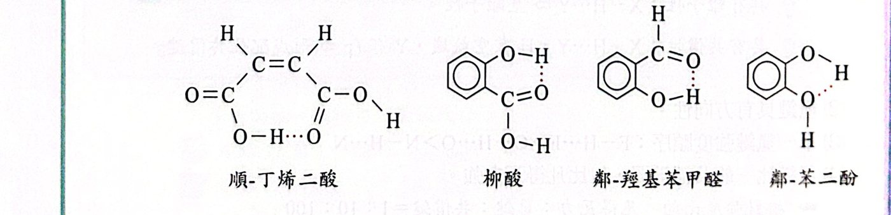
(1) 使熔點、沸點升高
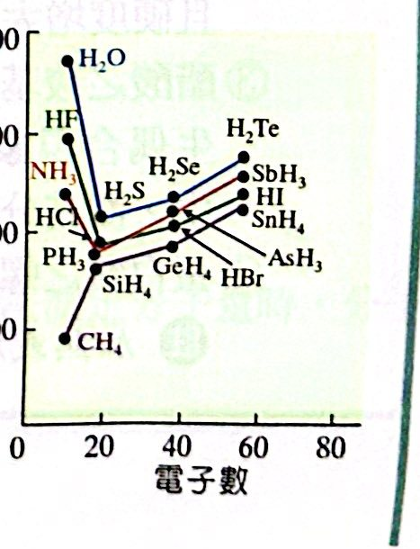
(2) 使水溶解度升高：能與水形成氫鍵者易溶於水，如乙酸、乙醇、丙酮。
(3) 增加黏滯性：氫鍵愈多愈黏，如甘油 C3H5(OH)3、乙二醇 C2H4(OH)2。
(4) 影響結構：
1. 液、氣態 HF 以 (HF)x（x ＝ 2～6）存在；固態為鏈狀結構。
2. 水結冰形成四面體網狀結構，留有空隙 → 密度變小、硬度增大。
3. 醋酸以氫鍵形成二聚體，在低極性有機溶劑中測得分子量約 120。
4. 蛋白質的螺旋結構（加熱或加酒精會破壞氫鍵，不能復原）。
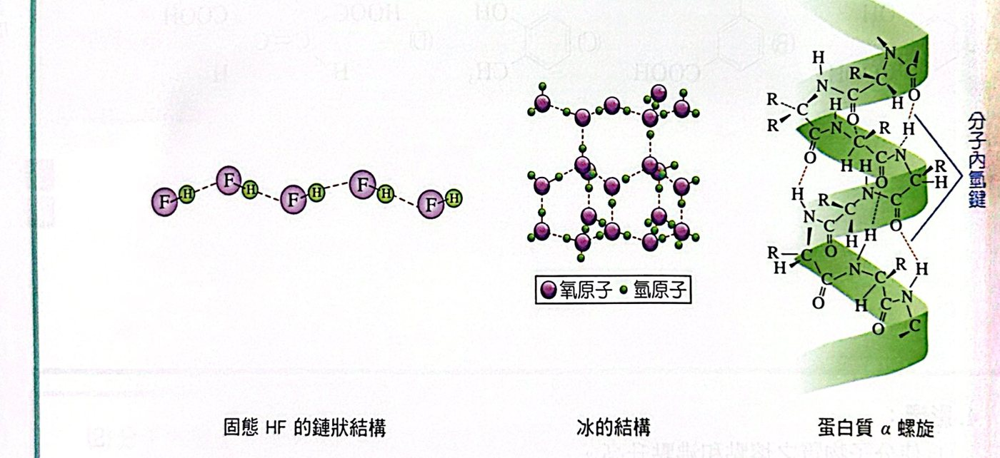
| CO2 與 O2 | H2S 與 PCl3 | CH4 與 HCl | NH3 與 H2O | |
|---|---|---|---|---|
| 偶極−偶極力 | × | ○ | × | ○ |
| 偶極−誘發偶極力 | × | × | ○ | × |
| 分散力 | ○ | ○ | ○ | ○ |
| 氫鍵 | × | × | × | ○ |
| 晶體 | 組成粒子 | 粒子間引力 | 性質 |
|---|---|---|---|
| 離子晶體（NaCl、CaCl2） | 陰、陽離子 | 離子鍵 | 高熔點、硬、脆；固態絕緣，熔融可導電 |
| 金屬晶體（Na、Cu） | 陽離子、自由電子 | 金屬鍵 | 良導體，有延展性 |
| 分子晶體（SO2、NH3） | 分子 | 氫鍵、凡得瓦力 | 低熔點、質軟、絕緣 |
| 共價網狀晶體（SiO2、C） | 原子 | 共價鍵 | 高熔點、質硬、絕緣（石墨可導電） |
熔點比較：
1. 先判斷晶體種類：金屬＋金屬 → 金屬晶體；金屬＋非金屬 → 離子晶體；非金屬＋非金屬 → 分子晶體或共價網狀固體（SiO2、Si、C）
2. 再判斷熔化時破壞的力：分子晶體破壞氫鍵或凡得瓦力；金屬晶體破壞金屬鍵；離子晶體破壞離子鍵；網狀晶體破壞共價鍵
3. 一般原則：共價網狀晶體 ＞ 離子晶體 ＞ 金屬晶體 ＞ 分子晶體
例：H2O(s) 熔化只破壞氫鍵與凡得瓦力；SiO2(s) 熔化要破壞共價鍵。

苯是非極性分子、氯仿是極性分子 ⇒ 兩者間有偶極−誘發偶極力與分散力，統稱凡得瓦力。
沒有離子，所以 (B)(D) 不存在；苯無偶極，所以沒有偶極−偶極力。
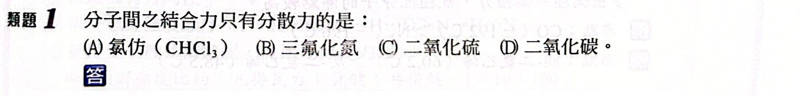
只有分散力 ⇒ 非極性分子：CO2（直線對稱）✓
氯仿、NF3、SO2 都是極性分子。
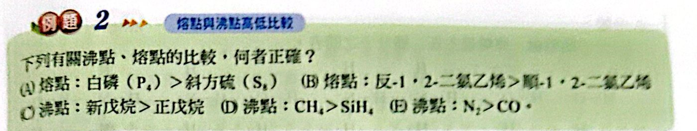
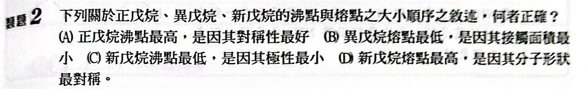
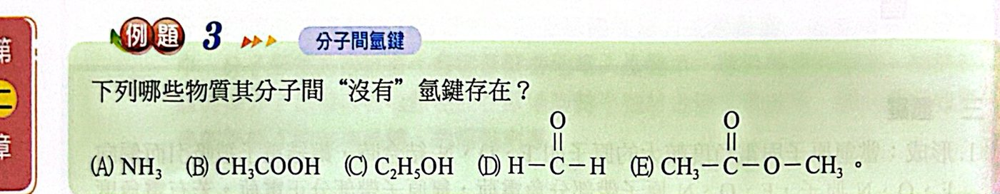
分子間氫鍵需要分子本身有 N−H、O−H 或 F−H 鍵：
- NH3、CH3COOH、C2H5OH 都有 → 有分子間氫鍵
- HCHO（甲醛）、CH3COOCH3（乙酸甲酯）的 H 都接在 C 上 → 分子間沒有氫鍵（但可與水形成氫鍵）
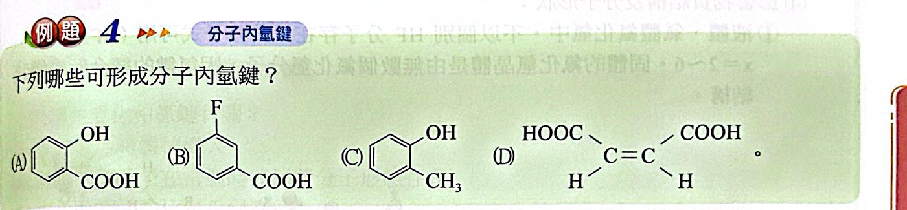
分子內氫鍵要在鄰位或順式，且一邊有 O−H：
- (A) 鄰-羥基苯甲酸（柳酸）：鄰位 −OH 與 −COOH ✓
- (B) 間位，太遠 ✗
- (C) 鄰位但 −CH3 無法接受氫鍵 ✗
- (D) 反式，兩個 COOH 在異側 ✗
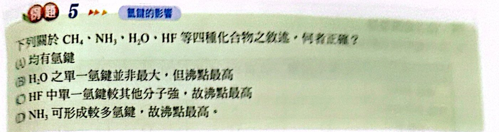
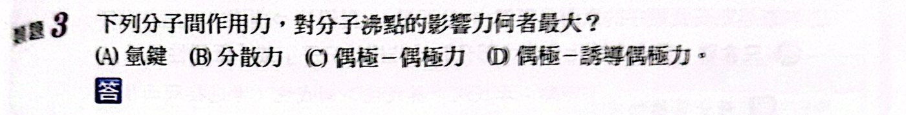
四者中氫鍵最強（約為凡得瓦力的 10 倍），對沸點影響最大。
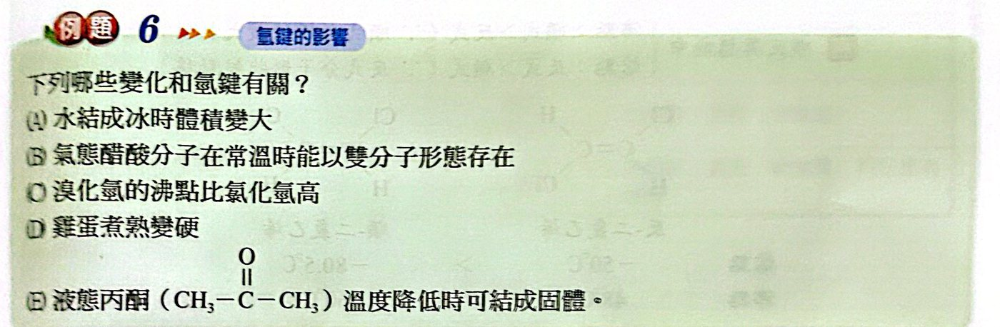
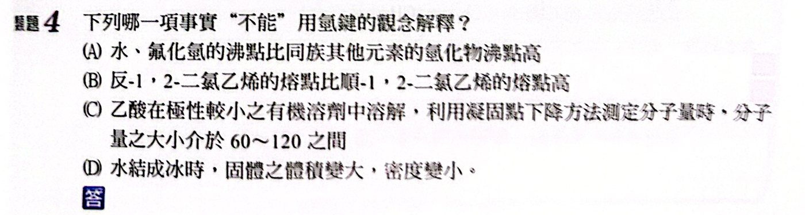
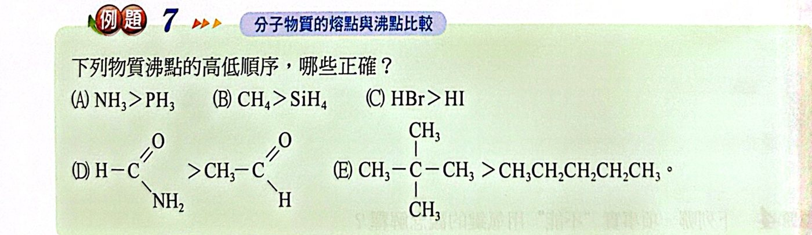
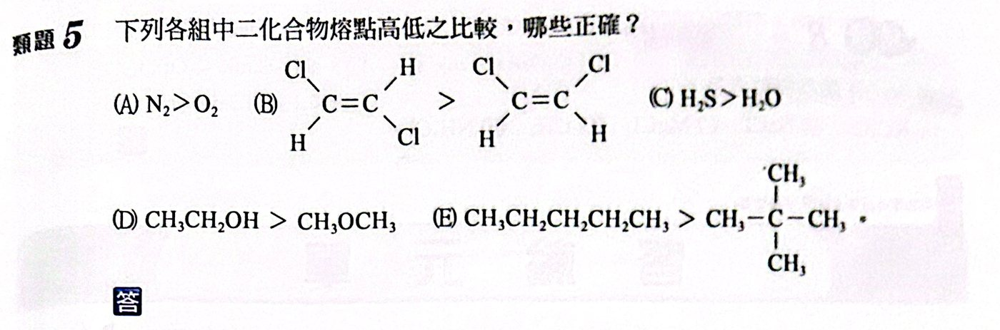
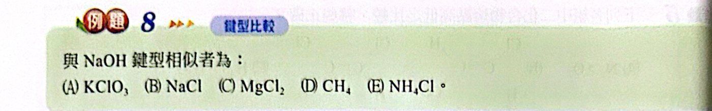
NaOH：Na+ 與 OH− 為離子鍵，O−H 為共價鍵。
同時有離子鍵與共價鍵的：KClO3（K+、ClO3−）、NH4Cl（NH4+、Cl−）。
NaCl、MgCl2 只有離子鍵；CH4 只有共價鍵。
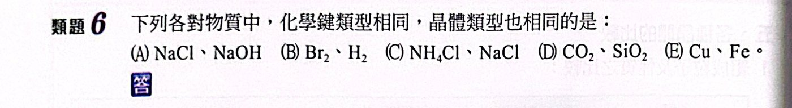
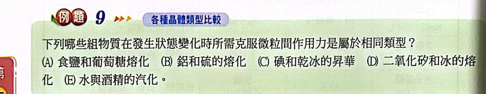
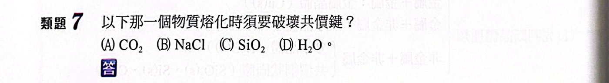
SiO2 為共價網狀固體，熔化要破壞 Si−O 共價鍵。
CO2、H2O 熔化只破壞分子間力；NaCl 破壞離子鍵。
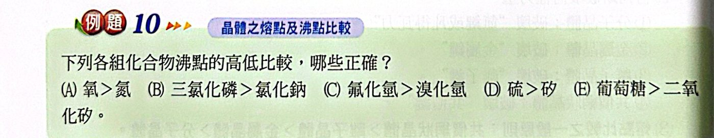
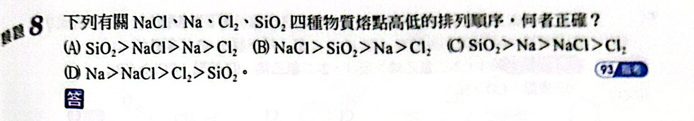
網狀（SiO2 1713 ℃）＞ 離子（NaCl 801 ℃）＞ 金屬（Na 98 ℃）＞ 分子（Cl2 −101 ℃）
凡得瓦力大小由分子的形狀、大小、所含電子數決定；溫度、壓力不改變分子間力本身的大小。
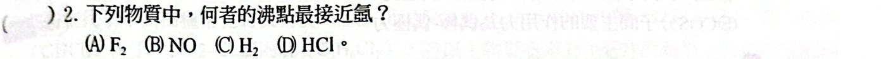
Ar 分子量 40，極性無；選分子量最接近且非極性的：F2（38）。
（NO 30、H2 2、HCl 36.5 為極性）
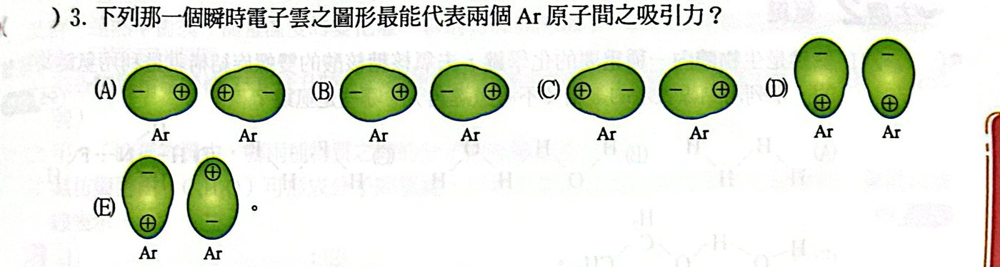
瞬間偶極要誘發鄰近原子產生「頭尾相接」的偶極：相鄰的兩端電荷必須相反。
- (A) 中間是 ⊕ 對 ⊕，互斥 ✗
- (B) 「− ⊕｜− ⊕」：相鄰為 ⊕ 對 −，頭尾相吸 ✓
- (C) 中間是 − 對 −，互斥 ✗
- (D) 兩個偶極並排同方向，同電荷相鄰 ✗
- (E) 並排反向雖然也有吸引，但瞬間偶極誘發的典型排列是沿同一軸頭尾相接，最能代表的是 (B)
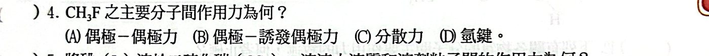
CH3F 為極性分子，但 H 接在 C 上，不能形成氫鍵 ⇒ 主要為偶極−偶極力。
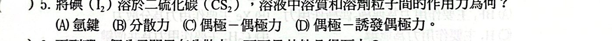
I2 與 CS2 都是非極性分子 ⇒ 只有分散力。
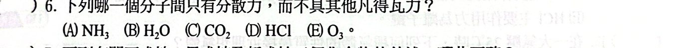
只有分散力 ⇒ 非極性分子：CO2。NH3、H2O、HCl、O3 都是極性分子。
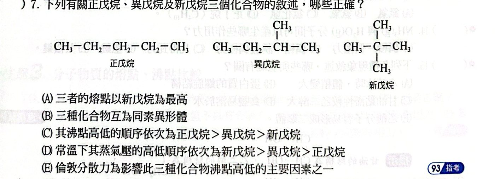
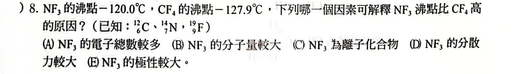
NF3 分子量 71、CF4 分子量 88 ⇒ CF4 電子較多、分散力較大。NF3 沸點反而較高，是因為 NF3 為極性分子（角錐形），CF4 為非極性。
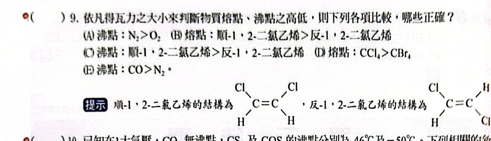
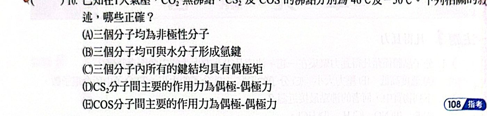
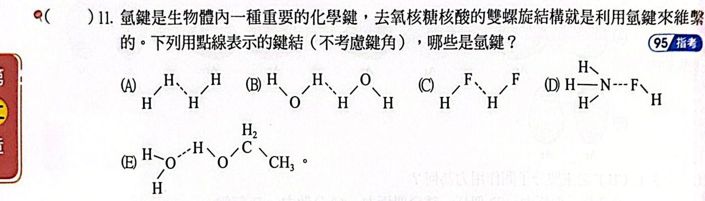
氫鍵 ＝ X−H···Y，X、Y 都要是 F、O、N，而且虛線必須連在「H」與「Y 的孤對」之間：
- (A) H−H···H：沒有 F、O、N ✗
- (B) O−H···O（水與水）✓
- (C) F−H···F（HF 與 HF）✓
- (D) 虛線連在 N 與 F 之間，中間沒有 H ✗
- (E) 水的 O 與乙醇的 O−H 之間：O···H−O ✓
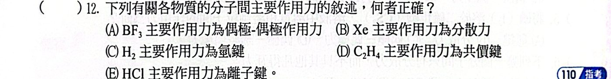
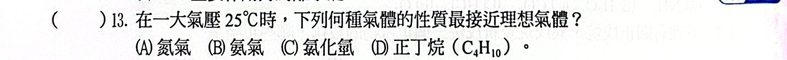
分子間作用力愈小愈接近理想氣體：氦氣（單原子、電子最少）。
NH3、H2O 都是極性分子 ⇒ 偶極−偶極力 ✓、凡得瓦力 ✓、氫鍵 ✓
兩者都是極性，沒有「誘發」偶極；共價鍵是分子內的鍵。
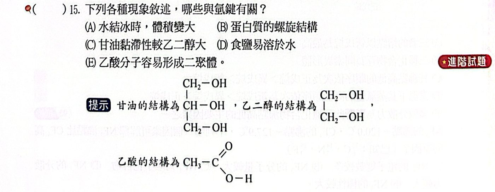
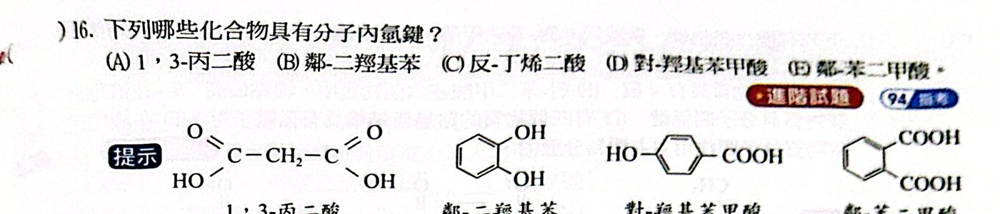
分子內氫鍵要兩個基團靠得夠近，能圍成 5～6 角環：
- (A) 1,3-丙二酸：O−H···O＝C 可經 CH2 圍成六角環 ✓
- (B) 鄰-二羥基苯：兩個 −OH 在鄰位 ✓
- (C) 反-丁烯二酸：兩個 COOH 在雙鍵異側，太遠 ✗
- (D) 對-羥基苯甲酸：對位，太遠 ✗
- (E) 鄰-苯二甲酸：兩個 COOH 在鄰位 ✓
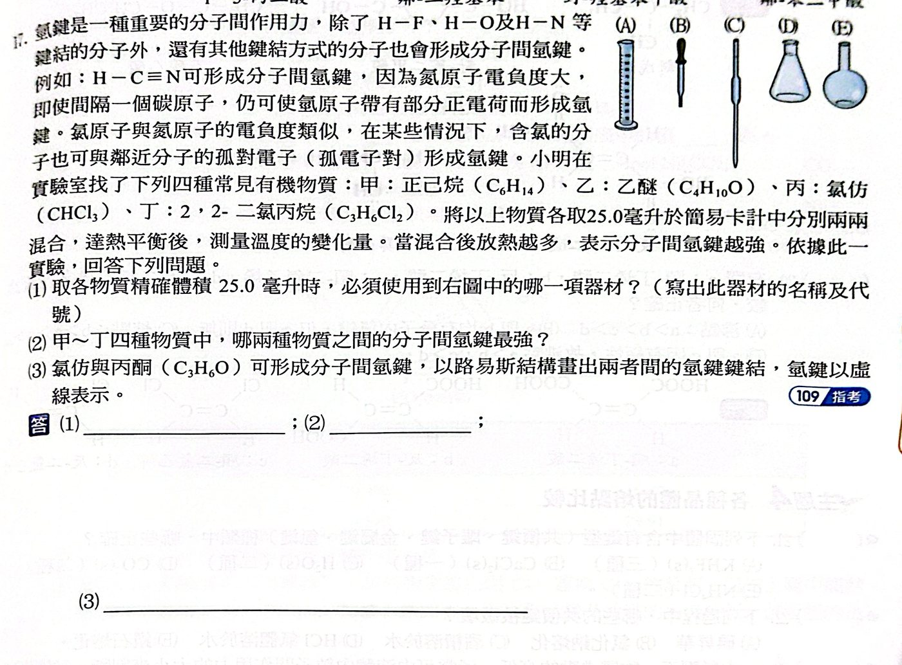
(1) 精確量取 25.0 mL 要用 (C) 吸量管（量筒只能粗略量取）。
(2) 分子間氫鍵需一方提供帶部分正電的 H（氯仿 CHCl3 的 H 被三個 Cl 拉走電子），另一方提供孤電子對（乙醚的 O）⇒ 丙（氯仿）與乙（乙醚）放熱最多。
正己烷沒有孤對也沒有帶正電的 H；2,2-二氯丙烷的 H 都接在不帶 Cl 的碳上，不易形成氫鍵。
(3) Cl3C−H ··· :O＝C(CH3)2
（氯仿的 H 以虛線連到丙酮羰基 O 的孤對電子）
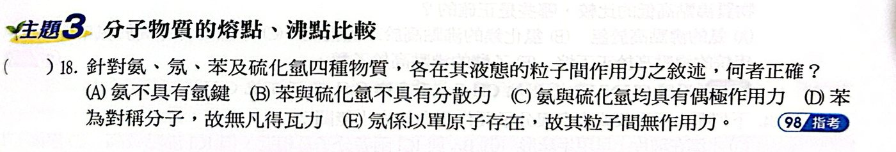
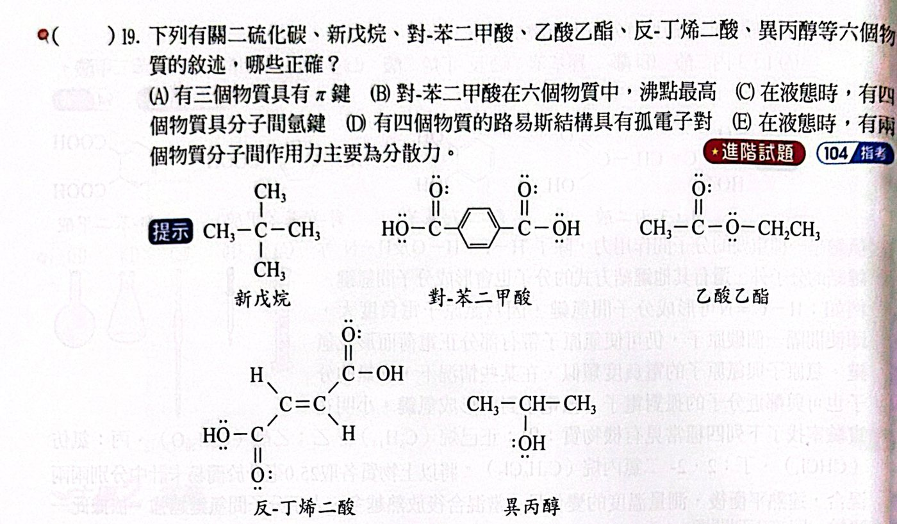
六個物質：CS2、新戊烷、對-苯二甲酸、乙酸乙酯、反-丁烯二酸、異丙醇
- (A) ✗ 有 π 鍵的：CS2（S＝C＝S）、對-苯二甲酸、乙酸乙酯（C＝O）、反-丁烯二酸 ＝ 4 個
- (B) ○ 對-苯二甲酸分子量最大，又有兩個 −COOH 形成大量氫鍵，沸點最高
- (C) ✗ 有分子間氫鍵（含 O−H）的：對-苯二甲酸、反-丁烯二酸、異丙醇 ＝ 3 個
- (D) ✗ 有孤對的：除了新戊烷以外全部 ＝ 5 個
- (E) ○ 主要為分散力的非極性分子：CS2、新戊烷 ＝ 2 個
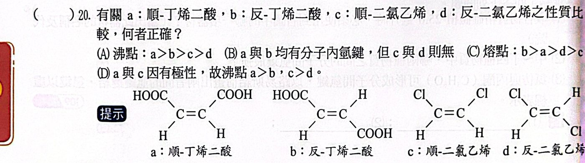
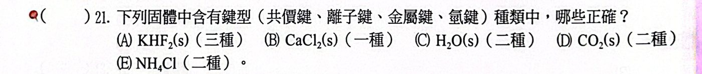
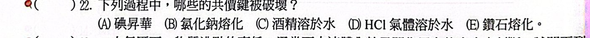
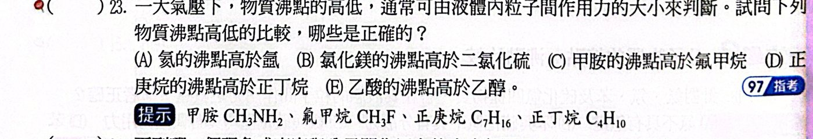
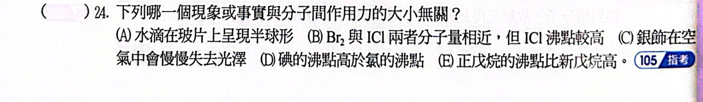